Chapter 15 Intermediate Regression
15.1 Parallel Slopes
The case when there is one numeric explanatory variable and one categorical explanatory variable is sometimes called a “parallel slopes” linear regression due to the shape of the predictions.
15.1.1 Parallel slopes linear regression
Here, you’ll revisit the Taiwan real estate dataset.
library(tidyverse)
library(fst)
taiwan_real_estate <- read_fst("data/taiwan_real_estate2.fst")
glimpse(taiwan_real_estate)## Rows: 414
## Columns: 4
## $ dist_to_mrt_m <dbl> 84.9, 306.6, 562.0, 562.0, 390.6, 2175.0, 623.5, 287.6…
## $ n_convenience <dbl> 10, 9, 5, 5, 5, 3, 7, 6, 1, 3, 1, 9, 5, 4, 4, 2, 6, 1,…
## $ house_age_years <fct> 30 to 45, 15 to 30, 0 to 15, 0 to 15, 0 to 15, 0 to 15…
## $ price_twd_msq <dbl> 11.47, 12.77, 14.31, 16.58, 13.04, 9.71, 12.19, 14.13,…15.1.1.1 Fitting & Interpreting model
To combine multiple explanatory variables in the regression formula, separate them with a +.
# Fit a linear regr'n of price_twd_msq vs. n_convenience
mdl_price_vs_conv <- lm(price_twd_msq ~ n_convenience, taiwan_real_estate)
# See the result
mdl_price_vs_conv##
## Call:
## lm(formula = price_twd_msq ~ n_convenience, data = taiwan_real_estate)
##
## Coefficients:
## (Intercept) n_convenience
## 8.224 0.798# Fit a linear regr'n of price_twd_msq vs. house_age_years, no intercept
mdl_price_vs_age <- lm(price_twd_msq ~ house_age_years + 0, taiwan_real_estate)
# See the result
mdl_price_vs_age##
## Call:
## lm(formula = price_twd_msq ~ house_age_years + 0, data = taiwan_real_estate)
##
## Coefficients:
## house_age_years0 to 15 house_age_years15 to 30 house_age_years30 to 45
## 12.64 9.88 11.39# Fit a linear regr'n of price_twd_msq vs. n_convenience plus house_age_years, no intercept
mdl_price_vs_both <- lm(price_twd_msq ~ n_convenience + house_age_years + 0, taiwan_real_estate)
# See the result
mdl_price_vs_both##
## Call:
## lm(formula = price_twd_msq ~ n_convenience + house_age_years +
## 0, data = taiwan_real_estate)
##
## Coefficients:
## n_convenience house_age_years0 to 15 house_age_years15 to 30
## 0.791 9.413 7.085
## house_age_years30 to 45
## 7.511Interpreting parallel slopes coefficients
The mdl_price_vs_both has one slope coefficient, and three intercept coefficients (one for each possible value of the categorical explanatory variable).
What is the meaning of the
n_conveniencecoefficient?- For each additional nearby convenience store, the expected house price, in TWD per square meter, increases by
0.79.
- For each additional nearby convenience store, the expected house price, in TWD per square meter, increases by
What is the meaning of the “0 to 15 years” coefficient?
- For a house aged 0 to 15 years with zero nearby convenience stores, the expected house price is
9.41TWD per square meter.
- For a house aged 0 to 15 years with zero nearby convenience stores, the expected house price is
15.1.1.2 Visualizing each IV
To visualize the relationship between a numeric explanatory variable and the numeric response, you can draw a scatter plot with a linear trend line.
With a single numeric explanatory variable, the predictions form a single straight line.
# Using taiwan_real_estate, plot price_twd_msq vs. n_convenience
ggplot(taiwan_real_estate, aes(n_convenience, price_twd_msq)) +
# Add a point layer
geom_point() +
# Add a smooth trend line using linear regr'n, no ribbon
geom_smooth(method = "lm", se = FALSE)## `geom_smooth()` using formula = 'y ~ x'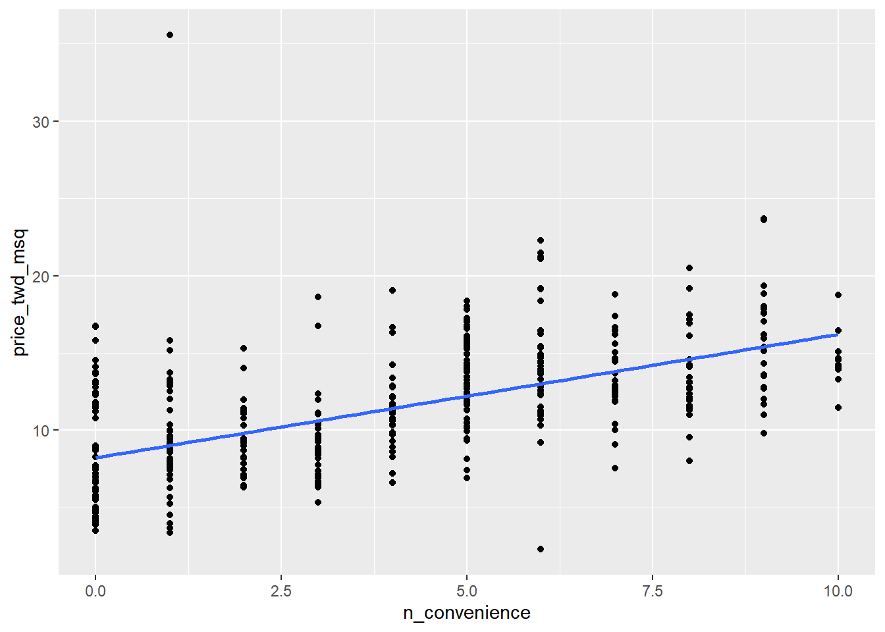
To visualize the relationship between a categorical explanatory variable and the numeric response, you can draw a box plot.
With a single categorical explanatory variable, the predictions are the means for each category.
# Using taiwan_real_estate, plot price_twd_msq vs. house_age_years
ggplot(taiwan_real_estate, aes(house_age_years, price_twd_msq)) +
# Add a box plot layer
geom_boxplot()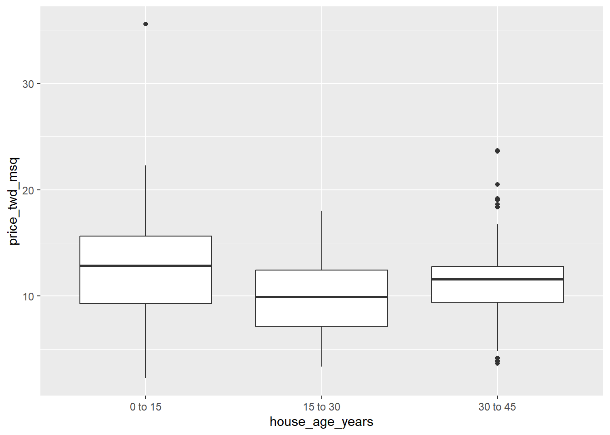
15.1.1.3 Visualizing parallel slopes
The moderndive package includes an extra geom, geom_parallel_slopes() to show the predictions.
# Using taiwan_real_estate, plot price_twd_msq vs. n_convenience colored by house_age_years
ggplot(taiwan_real_estate, aes(n_convenience, price_twd_msq, color = house_age_years)) +
# Add a point layer
geom_point() +
# Add parallel slopes, no ribbon
moderndive::geom_parallel_slopes(se = FALSE)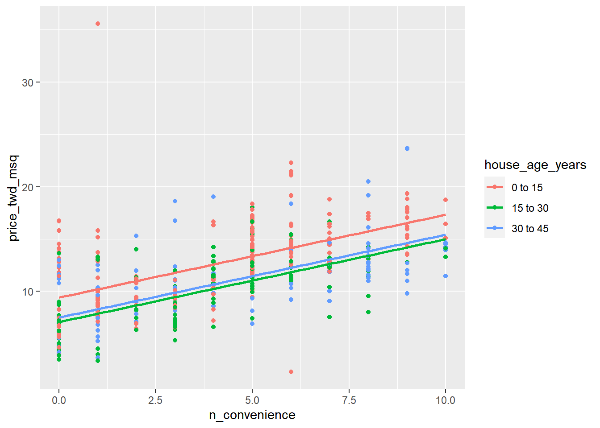
The “parallel slope” model name comes from the fact that the prediction for each category is a slope, and all those slopes are parallel.
15.1.2 Predicting parallel slopes
15.1.2.1 Predicting parallel slopes model
Just as with the case of a single explanatory variable, the workflow has two steps: create a data frame of explanatory variables, then add a column of predictions.
Make a grid (expand_grid()) of explanatory data, formed from combinations of the following variables.
# Make a grid of explanatory data
explanatory_data <- expand_grid(
# Set n_convenience to zero to ten
n_convenience = 0:10,
# Set house_age_years to the unique values of that variable
house_age_years = unique(taiwan_real_estate$house_age_years)
)
# See the result
explanatory_data## # A tibble: 33 × 2
## n_convenience house_age_years
## <int> <fct>
## 1 0 30 to 45
## 2 0 15 to 30
## 3 0 0 to 15
## 4 1 30 to 45
## 5 1 15 to 30
## 6 1 0 to 15
## 7 2 30 to 45
## 8 2 15 to 30
## 9 2 0 to 15
## 10 3 30 to 45
## # ℹ 23 more rows# Add predictions to the data frame
prediction_data <- explanatory_data %>%
mutate(price_twd_msq = predict(mdl_price_vs_both, explanatory_data))
# See the result
prediction_data## # A tibble: 33 × 3
## n_convenience house_age_years price_twd_msq
## <int> <fct> <dbl>
## 1 0 30 to 45 7.51
## 2 0 15 to 30 7.09
## 3 0 0 to 15 9.41
## 4 1 30 to 45 8.30
## 5 1 15 to 30 7.88
## 6 1 0 to 15 10.2
## 7 2 30 to 45 9.09
## 8 2 15 to 30 8.67
## 9 2 0 to 15 11.0
## 10 3 30 to 45 9.89
## # ℹ 23 more rowsTo make sure you’ve got the right answer, you can add your predictions to the ggplot with the geom_parallel_slopes() lines.
# Update the plot to add a point layer of predictions
taiwan_real_estate %>%
ggplot(aes(n_convenience, price_twd_msq, color = house_age_years)) +
geom_point() +
moderndive::geom_parallel_slopes(se = FALSE) +
# Add points using prediction_data, with size 5 and shape 15
geom_point(data = prediction_data, size = 5, shape = 15)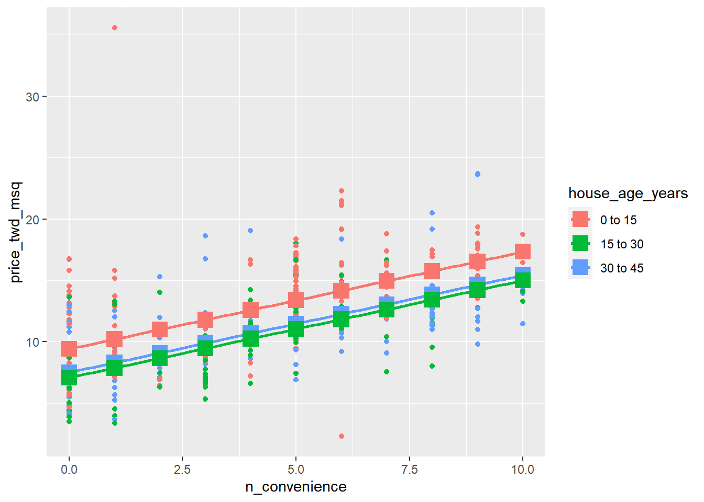
15.1.2.2 Manually calculating predictions
As with simple linear regression, you can manually calculate the predictions from the model coefficients.
The only change for the parallel slopes case is that the intercept is different for each category of the categorical explanatory variable. That means you need to consider the case when (case_when or if_else) each each category occurs separately.
dataframe %>%
mutate(
case_when(
condition_1 ~ value_1,
condition_2 ~ value_2,
# ...
condition_n ~ value_n
)
)Assign each of the elements of coeffs to the appropriate variable.
# Get the coefficients from mdl_price_vs_both
coeffs <- coefficients(mdl_price_vs_both)
# Extract the slope coefficient
slope <- coeffs[1]
# Extract the intercept coefficient for 0 to 15
intercept_0_15 <- coeffs[2]
# Extract the intercept coefficient for 15 to 30
intercept_15_30 <- coeffs[3]
# Extract the intercept coefficient for 30 to 45
intercept_30_45 <- coeffs[4]
# See elements
list(coeffs = coeffs, slope = slope, intercept_0_15 = intercept_0_15, intercept_15_30 = intercept_15_30, intercept_30_45 = intercept_30_45)## $coeffs
## n_convenience house_age_years0 to 15 house_age_years15 to 30
## 0.791 9.413 7.085
## house_age_years30 to 45
## 7.511
##
## $slope
## n_convenience
## 0.791
##
## $intercept_0_15
## house_age_years0 to 15
## 9.41
##
## $intercept_15_30
## house_age_years15 to 30
## 7.09
##
## $intercept_30_45
## house_age_years30 to 45
## 7.51prediction_data <- explanatory_data %>%
mutate(
# Consider the 3 cases to choose the intercept
intercept = case_when(
house_age_years == "0 to 15" ~ intercept_0_15,
house_age_years == "15 to 30" ~ intercept_15_30,
house_age_years == "30 to 45" ~ intercept_30_45
),
# Manually calculate the predictions
price_twd_msq = intercept + slope * n_convenience
)
# See the results
prediction_data## # A tibble: 33 × 4
## n_convenience house_age_years intercept price_twd_msq
## <int> <fct> <dbl> <dbl>
## 1 0 30 to 45 7.51 7.51
## 2 0 15 to 30 7.09 7.09
## 3 0 0 to 15 9.41 9.41
## 4 1 30 to 45 7.51 8.30
## 5 1 15 to 30 7.09 7.88
## 6 1 0 to 15 9.41 10.2
## 7 2 30 to 45 7.51 9.09
## 8 2 15 to 30 7.09 8.67
## 9 2 0 to 15 9.41 11.0
## 10 3 30 to 45 7.51 9.89
## # ℹ 23 more rows15.1.3 Assessing model performance
Model performance metrics
Coefficient of determination (R-squared)
How well the linear regression line fits the observed values.
Larger is better.
Residual standard error (RSE)
The typical size of the residuals.
Smaller is better.
Adjusted coefficient of determination (Adjusted R-squared)
More explanatory variables increases R². Too many explanatory variables causes overfitting.
Adjusted coefficient of determination penalizes more explanatory variables.
15.1.3.1 Compare adjusted R²
Here you’ll compare the coefficient of determination for the three Taiwan house price models, to see which gives the best result.
library(broom)
mdl_price_vs_conv %>%
# Get the model-level coefficients
glance() %>%
# Select the coeffs of determination
select(r.squared, adj.r.squared)## # A tibble: 1 × 2
## r.squared adj.r.squared
## <dbl> <dbl>
## 1 0.326 0.324# Get the coeffs of determination for mdl_price_vs_age
mdl_price_vs_age %>%
glance() %>%
select(r.squared, adj.r.squared)## # A tibble: 1 × 2
## r.squared adj.r.squared
## <dbl> <dbl>
## 1 0.896 0.895# Get the coeffs of determination for mdl_price_vs_both
mdl_price_vs_both %>%
glance() %>%
select(r.squared, adj.r.squared)## # A tibble: 1 × 2
## r.squared adj.r.squared
## <dbl> <dbl>
## 1 0.931 0.931When both explanatory variables are included in the model, the adjusted coefficient of determination is higher, resulting in a better fit.
15.1.3.2 Compare RSE
mdl_price_vs_conv %>%
# Get the model-level coefficients
glance() %>%
# Pull out the RSE
pull(sigma)## [1] 3.38# Get the RSE for mdl_price_vs_age
mdl_price_vs_age %>%
glance() %>%
pull(sigma)## [1] 3.95# Get the RSE for mdl_price_vs_both
mdl_price_vs_both %>%
glance() %>%
pull(sigma)## [1] 3.21By including both explanatory variables in the model, a lower RSE was achieved, indicating a smaller difference between the predicted responses and the actual responses.
15.2 Interactions
15.2.1 Models for each category
15.2.1.1 One model per category
The model you ran on the whole dataset fits some parts of the data better than others. It’s worth taking a look at what happens when you run a linear model on different parts of the dataset separately, to see if each model agrees or disagrees with the others.
# Filter for rows where house age is 0 to 15 years
taiwan_0_to_15 <- taiwan_real_estate %>% filter(house_age_years == "0 to 15")
# Filter for rows where house age is 15 to 30 years
taiwan_15_to_30 <- taiwan_real_estate %>% filter(house_age_years == "15 to 30")
# Filter for rows where house age is 30 to 45 years
taiwan_30_to_45 <- taiwan_real_estate %>% filter(house_age_years == "30 to 45")
# Model price vs. no. convenience stores using 0 to 15 data
mdl_0_to_15 <- lm(price_twd_msq ~ n_convenience, taiwan_0_to_15)
# Model price vs. no. convenience stores using 15 to 30 data
mdl_15_to_30 <- lm(price_twd_msq ~ n_convenience, taiwan_15_to_30)
# Model price vs. no. convenience stores using 30 to 45 data
mdl_30_to_45 <- lm(price_twd_msq ~ n_convenience, taiwan_30_to_45)
# See the results
mdl_0_to_15##
## Call:
## lm(formula = price_twd_msq ~ n_convenience, data = taiwan_0_to_15)
##
## Coefficients:
## (Intercept) n_convenience
## 9.242 0.834mdl_15_to_30##
## Call:
## lm(formula = price_twd_msq ~ n_convenience, data = taiwan_15_to_30)
##
## Coefficients:
## (Intercept) n_convenience
## 6.872 0.852mdl_30_to_45##
## Call:
## lm(formula = price_twd_msq ~ n_convenience, data = taiwan_30_to_45)
##
## Coefficients:
## (Intercept) n_convenience
## 8.113 0.66915.2.1.2 Predicting multiple models
In order to see what each of the models for individual categories are doing, it’s helpful to make predictions from them.
Remember that you only have a single explanatory variable in these models, so expand_grid() isn’t needed.
# Add column of predictions using "0 to 15" model and explanatory data
prediction_data_0_to_15 <- explanatory_data %>%
mutate(price_twd_msq = predict(mdl_0_to_15, explanatory_data))
# Same again, with "15 to 30"
prediction_data_15_to_30 <- explanatory_data %>%
mutate(price_twd_msq = predict(mdl_15_to_30, explanatory_data))
# Same again, with "30 to 45"
prediction_data_30_to_45 <- explanatory_data %>%
mutate(price_twd_msq = predict(mdl_30_to_45, explanatory_data))15.2.1.3 Visualizing multiple models
# Extend the plot to include prediction points
ggplot(taiwan_real_estate, aes(n_convenience, price_twd_msq,
color = house_age_years)) +
geom_point() +
geom_smooth(method = "lm", se = FALSE) +
# Add points using prediction_data_0_to_15, colored red, size 3, shape 15
geom_point(data = prediction_data_0_to_15, color = "red", size = 3, shape = 15) +
# Add points using prediction_data_15_to_30, colored green, size 3, shape 15
geom_point(data = prediction_data_15_to_30, color = "green", size = 3, shape = 15) +
# Add points using prediction_data_30_to_45, colored blue, size 3, shape 15
geom_point(data = prediction_data_30_to_45, color = "blue", size = 3, shape = 15)## `geom_smooth()` using formula = 'y ~ x'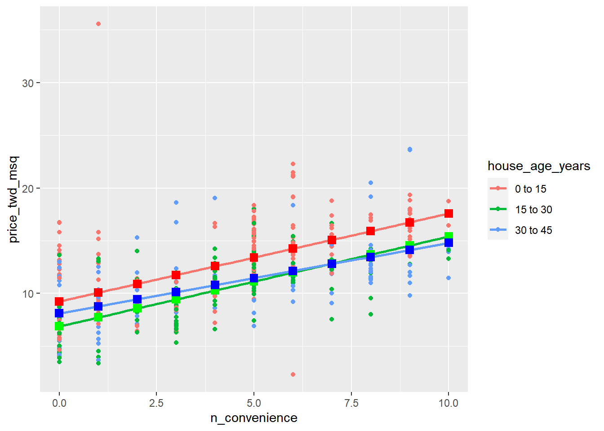
It’s a good sign that our predictions match those of ggplot’s. Notice that the 30 to 45 year house age group has a much shallower slope compared to the other lines.
15.2.1.4 Assessing model performance
To test which approach is best—the whole dataset model or the models for each house age category—you need to calculate some metrics.
Here’s, you’ll compare the coefficient of determination and the residual standard error for each model.
mdl_all_ages <- lm(formula = price_twd_msq ~ n_convenience, data = taiwan_real_estate)
# Get the coeff. of determination for mdl_all_ages
mdl_all_ages %>%
glance() %>%
pull(r.squared)## [1] 0.326# Get the coeff. of determination for mdl_0_to_15
mdl_0_to_15 %>%
glance() %>%
pull(r.squared)## [1] 0.312# Get the coeff. of determination for mdl_15_to_30
mdl_15_to_30 %>%
glance() %>%
pull(r.squared)## [1] 0.442# Get the coeff. of determination for mdl_30_to_45
mdl_30_to_45 %>%
glance() %>%
pull(r.squared)## [1] 0.313# Get the RSE for mdl_all_age
mdl_all_ages %>%
glance() %>%
pull(sigma)## [1] 3.38# Get the RSE for mdl_0_to_15
mdl_0_to_15 %>%
glance() %>%
pull(sigma)## [1] 3.56# Get the RSE for mdl_15_to_30
mdl_15_to_30 %>%
glance() %>%
pull(sigma)## [1] 2.59# Get the RSE for mdl_30_to_45
mdl_30_to_45 %>%
glance() %>%
pull(sigma)## [1] 3.24It seems that both metrics for the 15 to 30 age group model are much better than those for the whole dataset model, but the models for the other two age groups are similar to the whole dataset model.
Thus using individual models will improve predictions for 15 to 30 age group.
15.2.2 One model with an interaction
What is an interaction?
Specifying interactions
No interactions
response ~ explntry1 + explntry2
With interactions (implicit)
response_var ~ explntry1 * explntry2
With interactions (explicit)
response ~ explntry1 + explntry2 + explntry1:explntry2
15.2.2.1 Specifying an interaction
Ideally, you’d have a single model that had all the predictive power of the individual models.
Defining this single model is achieved through adding interactions between explanatory variables.
Concise code that is quick to type and to read.
# Model price vs both with an interaction using "times" syntax
lm(price_twd_msq ~ n_convenience * house_age_years, taiwan_real_estate)##
## Call:
## lm(formula = price_twd_msq ~ n_convenience * house_age_years,
## data = taiwan_real_estate)
##
## Coefficients:
## (Intercept) n_convenience
## 9.2417 0.8336
## house_age_years15 to 30 house_age_years30 to 45
## -2.3698 -1.1286
## n_convenience:house_age_years15 to 30 n_convenience:house_age_years30 to 45
## 0.0183 -0.1649Explicit code that describes what you are doing in detail.
# Model price vs both with an interaction using "colon" syntax
lm(price_twd_msq ~ n_convenience + house_age_years + n_convenience: house_age_years, taiwan_real_estate)##
## Call:
## lm(formula = price_twd_msq ~ n_convenience + house_age_years +
## n_convenience:house_age_years, data = taiwan_real_estate)
##
## Coefficients:
## (Intercept) n_convenience
## 9.2417 0.8336
## house_age_years15 to 30 house_age_years30 to 45
## -2.3698 -1.1286
## n_convenience:house_age_years15 to 30 n_convenience:house_age_years30 to 45
## 0.0183 -0.164915.2.2.2 Understandable coeffs
The previous model with the interaction term returned coefficients that were a little tricky to interpret. In order clarify what the model is predicting, you can reformulate the model in a way that returns understandable coefficients.
For further clarity, you can compare the results to the models on the separate house age categories.
Fit a linear regression of price_twd_msq versus house_age_years plus an interaction between n_convenience and house_age_years, and no global intercept.
# Model price vs. house age plus an interaction, no intercept
mdl_readable_inter <- lm(price_twd_msq ~ house_age_years + house_age_years:n_convenience + 0, taiwan_real_estate)
# See the result
mdl_readable_inter##
## Call:
## lm(formula = price_twd_msq ~ house_age_years + house_age_years:n_convenience +
## 0, data = taiwan_real_estate)
##
## Coefficients:
## house_age_years0 to 15 house_age_years15 to 30
## 9.242 6.872
## house_age_years30 to 45 house_age_years0 to 15:n_convenience
## 8.113 0.834
## house_age_years15 to 30:n_convenience house_age_years30 to 45:n_convenience
## 0.852 0.669The expected increase in house price for each nearby convenience store is lowest for the 30 to 45 year age group.
For comparison, get the coefficients for the three models for each category.
# Get coefficients for mdl_0_to_15
coefficients(mdl_0_to_15)## (Intercept) n_convenience
## 9.242 0.834# Get coefficients for mdl_15_to_30
coefficients(mdl_15_to_30)## (Intercept) n_convenience
## 6.872 0.852# Get coefficients for mdl_30_to_45
coefficients(mdl_15_to_30)## (Intercept) n_convenience
## 6.872 0.852Sometimes fiddling about with how the model formula is specified makes it easier to interpret the coefficients. In this version, you can see how each category has its own intercept and slope (just like the 3 separate models had).
15.2.3 Predict with interactions
15.2.3.1 Predicting with interactions
mdl_price_vs_both_inter <- lm(price_twd_msq ~ house_age_years + n_convenience:house_age_years + 0, taiwan_real_estate)
# Make a grid of explanatory data
explanatory_data <- expand_grid(
# Set n_convenience to zero to ten
n_convenience = 0:10,
# Set house_age_years to the unique values of that variable
house_age_years = unique(taiwan_real_estate$house_age_years)
)
# See the result
explanatory_data## # A tibble: 33 × 2
## n_convenience house_age_years
## <int> <fct>
## 1 0 30 to 45
## 2 0 15 to 30
## 3 0 0 to 15
## 4 1 30 to 45
## 5 1 15 to 30
## 6 1 0 to 15
## 7 2 30 to 45
## 8 2 15 to 30
## 9 2 0 to 15
## 10 3 30 to 45
## # ℹ 23 more rows# Add predictions to the data frame
prediction_data <- explanatory_data %>%
mutate(price_twd_msq = predict(mdl_price_vs_both_inter, explanatory_data))
# See the result
prediction_data## # A tibble: 33 × 3
## n_convenience house_age_years price_twd_msq
## <int> <fct> <dbl>
## 1 0 30 to 45 8.11
## 2 0 15 to 30 6.87
## 3 0 0 to 15 9.24
## 4 1 30 to 45 8.78
## 5 1 15 to 30 7.72
## 6 1 0 to 15 10.1
## 7 2 30 to 45 9.45
## 8 2 15 to 30 8.58
## 9 2 0 to 15 10.9
## 10 3 30 to 45 10.1
## # ℹ 23 more rows# Using taiwan_real_estate, plot price vs. no. of convenience stores, colored by house age
ggplot(taiwan_real_estate, aes(n_convenience, price_twd_msq, color = house_age_years)) +
# Make it a scatter plot
geom_point() +
# Add linear regression trend lines, no ribbon
geom_smooth(method = "lm", se = FALSE)## `geom_smooth()` using formula = 'y ~ x'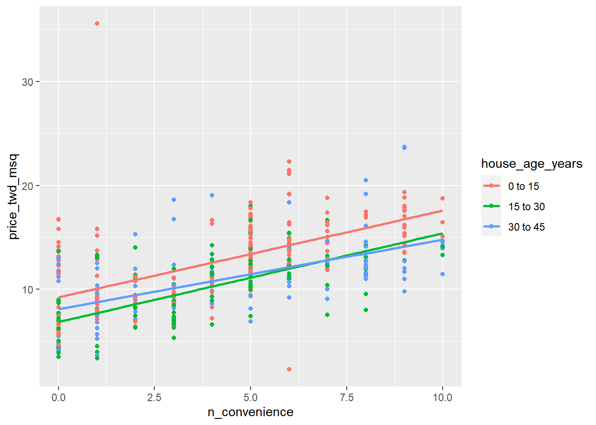
# Add points from prediction_data, size 5, shape 15
geom_point(data = prediction_data, size = 5, shape = 15)## geom_point: na.rm = FALSE
## stat_identity: na.rm = FALSE
## position_identity15.2.3.2 Manually calculating predictions
For mdl_price_vs_both_inter model, there are three separate lines to calculate for, and in each one, the prediction is an intercept plus a slope times the numeric explanatory value.
# Get the coefficients from mdl_price_vs_both_inter
coeffs <- coefficients(mdl_price_vs_both_inter)
# Get the intercept for 0 to 15 year age group
intercept_0_15 <- coeffs[1]
# Get the intercept for 15 to 30 year age group
intercept_15_30 <- coeffs[2]
# Get the intercept for 30 to 45 year age group
intercept_30_45 <- coeffs[3]
# Get the slope for 0 to 15 year age group
slope_0_15 <- coeffs[4]
# Get the slope for 15 to 30 year age group
slope_15_30 <- coeffs[5]
# Get the slope for 30 to 45 year age group
slope_30_45 <- coeffs[6]
coeffs## house_age_years0 to 15 house_age_years15 to 30
## 9.242 6.872
## house_age_years30 to 45 house_age_years0 to 15:n_convenience
## 8.113 0.834
## house_age_years15 to 30:n_convenience house_age_years30 to 45:n_convenience
## 0.852 0.669prediction_data <- explanatory_data %>%
mutate(
# Consider the 3 cases to choose the price
price_twd_msq = case_when(
house_age_years == "0 to 15" ~ intercept_0_15 + slope_0_15 * n_convenience,
house_age_years == "15 to 30" ~ intercept_15_30 + slope_15_30 * n_convenience,
house_age_years == "30 to 45" ~ intercept_30_45 + slope_30_45 * n_convenience
)
)
# See the result
prediction_data## # A tibble: 33 × 3
## n_convenience house_age_years price_twd_msq
## <int> <fct> <dbl>
## 1 0 30 to 45 8.11
## 2 0 15 to 30 6.87
## 3 0 0 to 15 9.24
## 4 1 30 to 45 8.78
## 5 1 15 to 30 7.72
## 6 1 0 to 15 10.1
## 7 2 30 to 45 9.45
## 8 2 15 to 30 8.58
## 9 2 0 to 15 10.9
## 10 3 30 to 45 10.1
## # ℹ 23 more rows15.2.4 Simpson’s Paradox
Simpson’s Paradox occurs when the trend (trend = slope coefficient) of a model on the whole dataset is very different from the trends shown by models on subsets of the dataset.

You can’t choose the best model in general — it depends on the dataset and the question you are trying to answer.
Usually (but not always) the grouped model contains more insight.
15.2.4.1 Modeling
Sometimes modeling a whole dataset suggests trends that disagree with models on separate parts of that dataset. This is known as Simpson’s paradox.
In the most extreme case, you may see a positive slope on the whole dataset, and negative slopes on every subset of that dataset (or the other way around).
You’ll look at eBay auctions of Palm Pilot M515 PDA models.
price: Final sale price, USDopenbid: The opening bid, USDauction_type: How long did the auction last?
auctions <- read_tsv("data/auctions.txt")
# Take a glimpse at the dataset
glimpse(auctions)## Rows: 343
## Columns: 3
## $ price <dbl> 260, 257, 260, 238, 232, 251, 248, 238, 232, 242, 250, 24…
## $ openbid <dbl> 0.01, 0.01, 0.01, 0.01, 1.00, 9.99, 215.00, 155.00, 50.00…
## $ auction_type <chr> "7 day auction", "3 day auction", "5 day auction", "7 day…Fit a linear regression model of price versus openbid. Look at the coefficients.
# Model price vs. opening bid using auctions
mdl_price_vs_openbid <- lm(price ~ openbid, auctions)
# See the result
mdl_price_vs_openbid##
## Call:
## lm(formula = price ~ openbid, data = auctions)
##
## Coefficients:
## (Intercept) openbid
## 229.2457 -0.0021Plot price versus openbid as a scatter plot with linear regression trend lines (no ribbon). Look at the trend line.
# Using auctions, plot price vs. opening bid as a scatter plot with linear regression trend lines
ggplot(auctions, aes(openbid, price)) +
geom_point() +
geom_smooth(method = "lm", se = FALSE)## `geom_smooth()` using formula = 'y ~ x'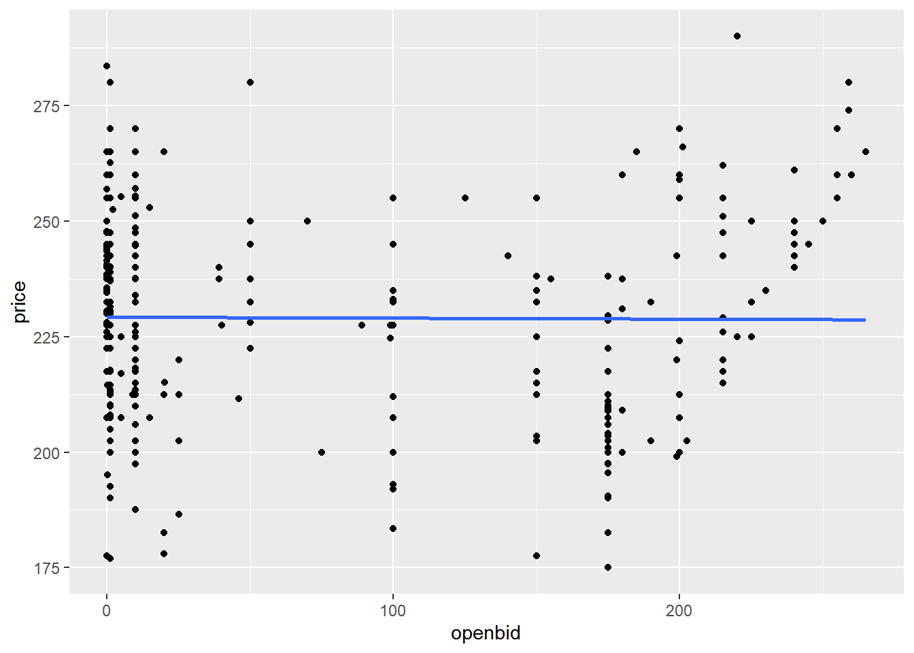
The slope coefficient is small enough that it might as well be zero. That is, opening bid appears to have no effect on the final sale price for Palm Pilots.
15.2.4.2 Modeling each category type
Now let’s look at what happens when you model the three auction types (3 day, 5 day, and 7 day) separately.
# Fit linear regression of price vs. opening bid and auction type, with an interaction.
mdl_price_vs_both <- lm(price ~ openbid + auction_type + auction_type:openbid, auctions)
# See the result
mdl_price_vs_both##
## Call:
## lm(formula = price ~ openbid + auction_type + auction_type:openbid,
## data = auctions)
##
## Coefficients:
## (Intercept) openbid
## 226.3690 -0.0290
## auction_type5 day auction auction_type7 day auction
## -4.7697 5.2339
## openbid:auction_type5 day auction openbid:auction_type7 day auction
## 0.1130 0.0327# Using auctions, plot price vs. opening bid colored by auction type as a scatter plot with linear regr'n trend lines
ggplot(auctions, aes(openbid, price, color = auction_type)) +
geom_point() +
geom_smooth(method = "lm", se = F)## `geom_smooth()` using formula = 'y ~ x'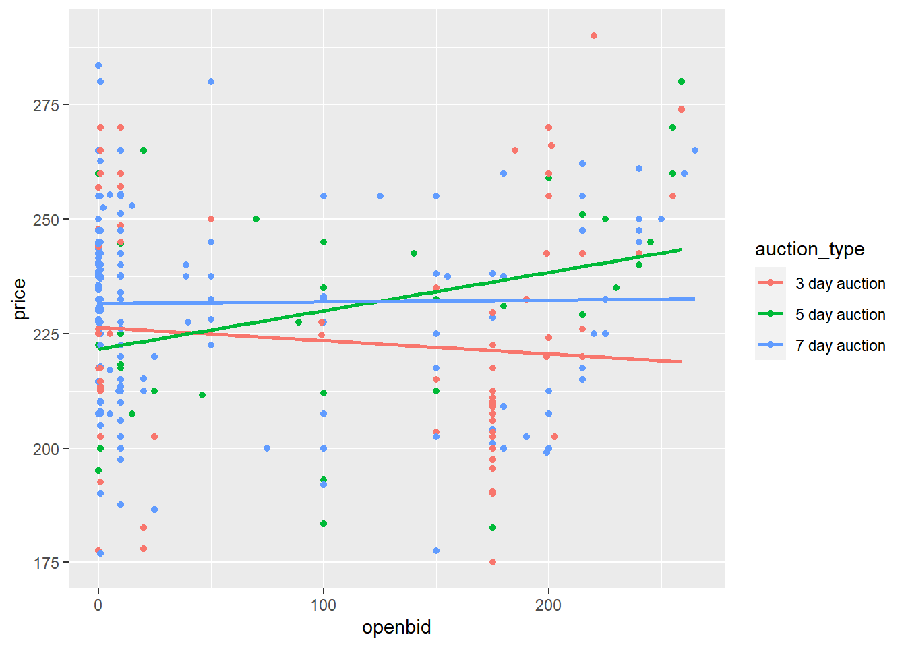
Interpreting models is a subtle art, and your conclusions need to be based on the question you are trying to answer.
Here, the answer to ‘Does opening bid affect final sale price?’ is no overall.
But the answer to ‘Does opening bid price affect final sale price for any type of auction?’ is yes, for 5 day auctions.
15.3 Multiple Linear Regression
15.3.1 Two numeric IVs
Visualizing 3 numeric variables
3D scatter plot
2D scatter plot with response as color
15.3.1.1 3D visualizations
For the case of three continuous variables, you can draw a 3D scatter plot, but perspective problems usually make it difficult to interpret.
There are some “flat” alternatives that provide easier interpretation, though they require a little thinking about to make.
# 3D scatter plot
library(plot3D)
scatter3D(fish$length_cm, fish$height_cm, fish$mass_g)
# cleaner code
library(plot3D)
library(magrittr)
fish %$%
scatter3D(length_cm, height_cm, mass_g)With the taiwan_real_estate dataset, draw a 3D scatter plot of the number of nearby convenience stores on the x-axis, the square-root of the distance to the nearest MRT stop on the y-axis, and the house price on the z-axis.
library(magrittr)
library(plot3D)## Warning: package 'plot3D' was built under R version 4.3.2# With taiwan_real_estate, draw a 3D scatter plot of no. of conv. stores, sqrt dist to MRT, and price
taiwan_real_estate %$%
scatter3D(n_convenience, sqrt(dist_to_mrt_m), price_twd_msq)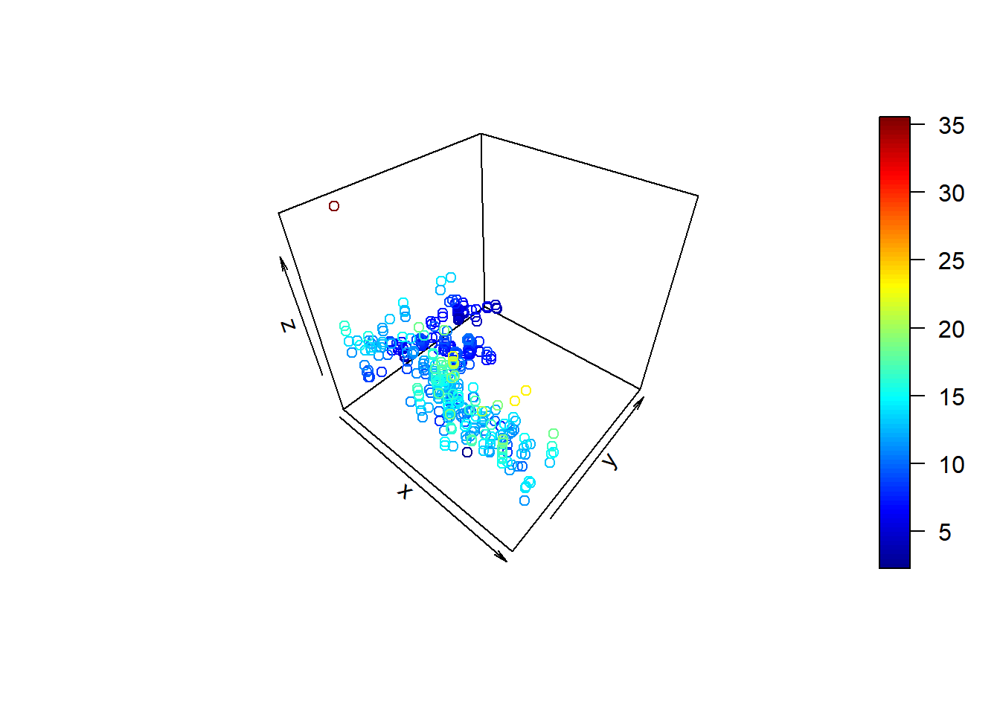
Use the continuous viridis color scale with scatter plot, using the "plasma" option.
# Using taiwan_real_estate, plot sqrt dist to MRT vs. no. of conv stores, colored by price
ggplot(taiwan_real_estate, aes(n_convenience, sqrt(dist_to_mrt_m), color = price_twd_msq)) +
# Make it a scatter plot
geom_point() +
# Use the continuous viridis plasma color scale
scale_color_viridis_c(option = "plasma")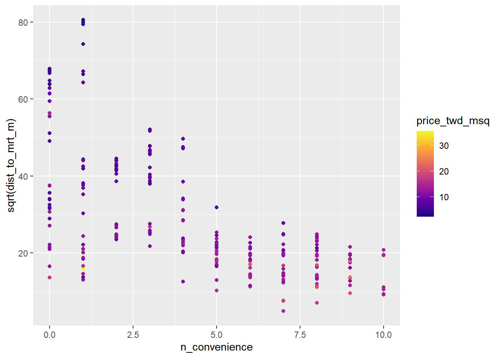
3D scatter plots are usually a pain to easily interpret due to problems with perspective. The best alternative for displaying a third variable involves using colors.
15.3.1.2 Modeling 2 numeric IVs
The code for modeling and predicting with two numeric explanatory variables in the same, other than a slight difference in how to specify the explanatory variables to make predictions against.
Here you’ll model and predict the house prices against the number of nearby convenience stores and the square-root of the distance to the nearest MRT station.
# Fit a linear regression of price vs. no. of conv. stores and sqrt dist. to nearest MRT, no interaction
mdl_price_vs_conv_dist <- lm(price_twd_msq ~ n_convenience + sqrt(dist_to_mrt_m), taiwan_real_estate)
# See the result
mdl_price_vs_conv_dist##
## Call:
## lm(formula = price_twd_msq ~ n_convenience + sqrt(dist_to_mrt_m),
## data = taiwan_real_estate)
##
## Coefficients:
## (Intercept) n_convenience sqrt(dist_to_mrt_m)
## 15.104 0.214 -0.157Create expanded grid of explanatory variables with number of convenience stores from 0 to 10 and the distance to the nearest MRT station as a sequence from 0 to 80 in steps of 10, all squared (0, 100, 400, …, 6400).
# Create expanded grid of explanatory variables with no. of conv. stores and dist. to nearest MRT
explanatory_data <- expand_grid(
n_convenience = 0:10,
dist_to_mrt_m = seq(0, 80, 10)^2
)
# Add predictions using mdl_price_vs_conv_dist and explanatory_data
prediction_data <- explanatory_data %>%
mutate(price_twd_msq = predict(mdl_price_vs_conv_dist, explanatory_data))
# See the result
prediction_data## # A tibble: 99 × 3
## n_convenience dist_to_mrt_m price_twd_msq
## <int> <dbl> <dbl>
## 1 0 0 15.1
## 2 0 100 13.5
## 3 0 400 12.0
## 4 0 900 10.4
## 5 0 1600 8.81
## 6 0 2500 7.24
## 7 0 3600 5.67
## 8 0 4900 4.09
## 9 0 6400 2.52
## 10 1 0 15.3
## # ℹ 89 more rowsExtend the plot to add a layer of points using the prediction data.
# Add predictions to plot
ggplot(
taiwan_real_estate,
aes(n_convenience, sqrt(dist_to_mrt_m), color = price_twd_msq)
) +
geom_point() +
scale_color_viridis_c(option = "plasma")+
# Add prediction points colored yellow, size 3
geom_point(data = prediction_data, color = "yellow", size = 3)
15.3.1.3 Including an interaction
Here you’ll run and predict the same model as in the previous exercise, but this time including an interaction between the explanatory variables.
# Fit a linear regression of price vs. no. of conv. stores and sqrt dist. to nearest MRT, with interaction
mdl_price_vs_conv_dist <- lm(price_twd_msq ~ n_convenience * sqrt(dist_to_mrt_m), taiwan_real_estate)
# See the result
mdl_price_vs_conv_dist##
## Call:
## lm(formula = price_twd_msq ~ n_convenience * sqrt(dist_to_mrt_m),
## data = taiwan_real_estate)
##
## Coefficients:
## (Intercept) n_convenience
## 14.7373 0.4243
## sqrt(dist_to_mrt_m) n_convenience:sqrt(dist_to_mrt_m)
## -0.1412 -0.0112# Create expanded grid of explanatory variables with no. of conv. stores and dist. to nearest MRT
explanatory_data <- expand_grid(
n_convenience = 0:10,
dist_to_mrt_m = seq(0, 80, 10)^2
)
# Add predictions using mdl_price_vs_conv_dist and explanatory_data
prediction_data <- explanatory_data %>%
mutate(price_twd_msq = predict(mdl_price_vs_conv_dist, explanatory_data))
# See the result
prediction_data## # A tibble: 99 × 3
## n_convenience dist_to_mrt_m price_twd_msq
## <int> <dbl> <dbl>
## 1 0 0 14.7
## 2 0 100 13.3
## 3 0 400 11.9
## 4 0 900 10.5
## 5 0 1600 9.09
## 6 0 2500 7.68
## 7 0 3600 6.26
## 8 0 4900 4.85
## 9 0 6400 3.44
## 10 1 0 15.2
## # ℹ 89 more rows# Add predictions to plot
ggplot(
taiwan_real_estate,
aes(n_convenience, sqrt(dist_to_mrt_m), color = price_twd_msq)
) +
geom_point() +
scale_color_viridis_c(option = "plasma") +
# Add prediction points colored yellow, size 3
geom_point(data = prediction_data, color = "yellow", size = 3)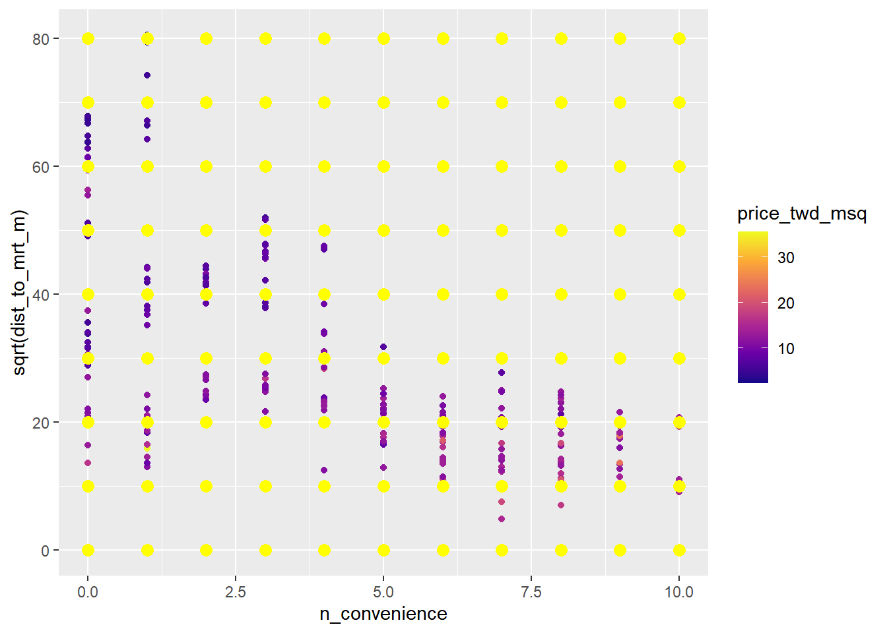
15.3.2 More than 2 IVs
15.3.2.1 Visualizing many variables
In addition to using x and y scales for two numeric variables, you can use color for a third numeric variable, and you can use faceting for categorical variables. And that’s about your limit before the plots become to difficult to interpret.
Here you’ll push the limits of the scatter plot by showing the house price, the distance to the MRT station, the number of nearby convenience stores, and the house age, all together in one plot.
# Using taiwan_real_estate, no. of conv. stores vs. sqrt of dist. to MRT, colored by plot house price
ggplot(taiwan_real_estate,
aes(sqrt(dist_to_mrt_m), n_convenience, color = price_twd_msq)) +
# Make it a scatter plot
geom_point() +
# Use the continuous viridis plasma color scale
scale_color_viridis_c(option = "plasma") +
# Facet, wrapped by house age
facet_wrap(~ house_age_years)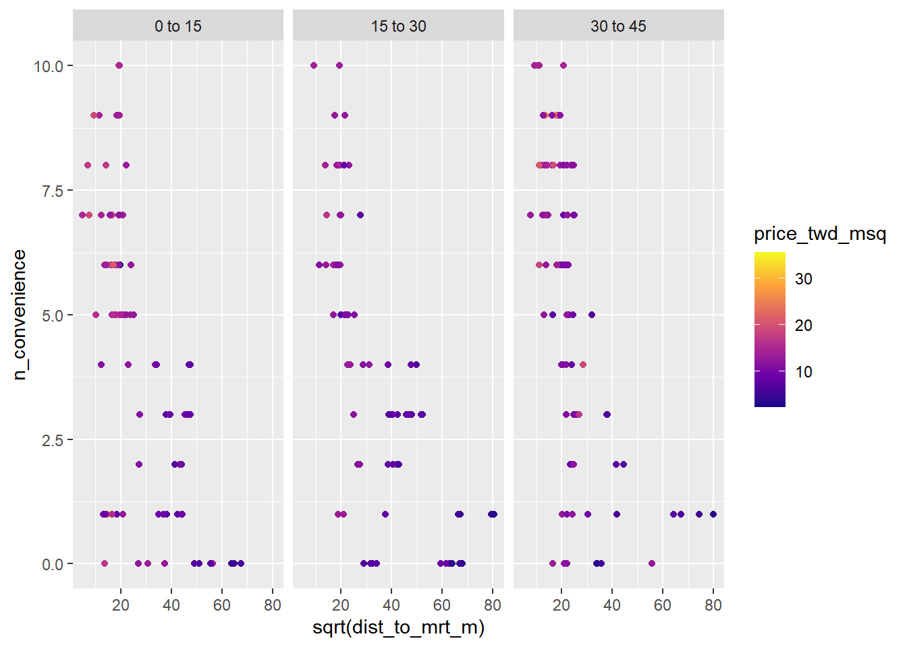
15.3.2.2 Different levels of interaction
No interactions
response ~ explntry1 + explntry2 + explntry3
2-way interactions between pairs of variables
response ~ explntry1 + explntry2 + explntry3 + explntry1:explntry2 + explntry1:explntry3 + explntry2:explntry3the same as
response ~ (explntry1 + explntry2 + explntry3) ^ 2
3-way interaction between all three variables
response ~ explntry1 + explntry2 + explntry3 + explntry1:explntry2 + explntry1:explntry3 + explntry2:explntry3 + explntry1:explntry2:explntry3the same as
response ~ explntry1 * explntry2 * explntry3
Don’t include a global intercept, and any interactions.
# Model price vs. no. of conv. stores, sqrt dist. to MRT station & house age, no global intercept, no interactions
mdl_price_vs_all_no_inter <- lm(price_twd_msq ~ n_convenience + sqrt(dist_to_mrt_m) + house_age_years + 0, taiwan_real_estate)
# See the result
mdl_price_vs_all_no_inter##
## Call:
## lm(formula = price_twd_msq ~ n_convenience + sqrt(dist_to_mrt_m) +
## house_age_years + 0, data = taiwan_real_estate)
##
## Coefficients:
## n_convenience sqrt(dist_to_mrt_m) house_age_years0 to 15
## 0.258 -0.148 15.474
## house_age_years15 to 30 house_age_years30 to 45
## 14.130 13.765Don’t include a global intercept, but do include 2-way and 3-way interactions between the explanatory variables.
# Model price vs. sqrt dist. to MRT station, no. of conv. stores & house age, no global intercept, 3-way interactions
mdl_price_vs_all_3_way_inter <- lm(
price_twd_msq ~ sqrt(dist_to_mrt_m) * n_convenience * house_age_years + 0,
taiwan_real_estate)
# See the result
mdl_price_vs_all_3_way_inter##
## Call:
## lm(formula = price_twd_msq ~ sqrt(dist_to_mrt_m) * n_convenience *
## house_age_years + 0, data = taiwan_real_estate)
##
## Coefficients:
## sqrt(dist_to_mrt_m)
## -0.16294
## n_convenience
## 0.37498
## house_age_years0 to 15
## 16.04685
## house_age_years15 to 30
## 13.76007
## house_age_years30 to 45
## 12.08877
## sqrt(dist_to_mrt_m):n_convenience
## -0.00839
## sqrt(dist_to_mrt_m):house_age_years15 to 30
## 0.03662
## sqrt(dist_to_mrt_m):house_age_years30 to 45
## 0.06128
## n_convenience:house_age_years15 to 30
## 0.07837
## n_convenience:house_age_years30 to 45
## 0.06672
## sqrt(dist_to_mrt_m):n_convenience:house_age_years15 to 30
## -0.00382
## sqrt(dist_to_mrt_m):n_convenience:house_age_years30 to 45
## 0.00440Don’t include a global intercept, but do include 2-way (not 3-way) interactions between the explanatory variables.
# Model price vs. sqrt dist. to MRT station, no. of conv. stores & house age, no global intercept, 2-way interactions
mdl_price_vs_all_2_way_inter <- lm(
price_twd_msq ~ (sqrt(dist_to_mrt_m) + n_convenience + house_age_years)^2 + 0,
taiwan_real_estate)
# See the result
mdl_price_vs_all_2_way_inter##
## Call:
## lm(formula = price_twd_msq ~ (sqrt(dist_to_mrt_m) + n_convenience +
## house_age_years)^2 + 0, data = taiwan_real_estate)
##
## Coefficients:
## sqrt(dist_to_mrt_m)
## -0.16202
## n_convenience
## 0.38491
## house_age_years0 to 15
## 16.02663
## house_age_years15 to 30
## 13.88079
## house_age_years30 to 45
## 11.92690
## sqrt(dist_to_mrt_m):n_convenience
## -0.00896
## sqrt(dist_to_mrt_m):house_age_years15 to 30
## 0.03160
## sqrt(dist_to_mrt_m):house_age_years30 to 45
## 0.06820
## n_convenience:house_age_years15 to 30
## -0.00689
## n_convenience:house_age_years30 to 45
## 0.1434215.3.2.3 Predicting
# Make a grid of explanatory data
explanatory_data <- expand_grid(
# Set dist_to_mrt_m a seq from 0 to 80 by 10s, squared
dist_to_mrt_m = seq(0, 80, 10) ^ 2,
# Set n_convenience to 0 to 10
n_convenience = 0:10,
# Set house_age_years to the unique values of that variable
house_age_years = unique(taiwan_real_estate$house_age_years)
)
# See the result
explanatory_data## # A tibble: 297 × 3
## dist_to_mrt_m n_convenience house_age_years
## <dbl> <int> <fct>
## 1 0 0 30 to 45
## 2 0 0 15 to 30
## 3 0 0 0 to 15
## 4 0 1 30 to 45
## 5 0 1 15 to 30
## 6 0 1 0 to 15
## 7 0 2 30 to 45
## 8 0 2 15 to 30
## 9 0 2 0 to 15
## 10 0 3 30 to 45
## # ℹ 287 more rows# Add predictions to the data frame
prediction_data <- explanatory_data %>%
mutate(price_twd_msq = predict(mdl_price_vs_all_3_way_inter, explanatory_data))
# See the result
prediction_data## # A tibble: 297 × 4
## dist_to_mrt_m n_convenience house_age_years price_twd_msq
## <dbl> <int> <fct> <dbl>
## 1 0 0 30 to 45 12.1
## 2 0 0 15 to 30 13.8
## 3 0 0 0 to 15 16.0
## 4 0 1 30 to 45 12.5
## 5 0 1 15 to 30 14.2
## 6 0 1 0 to 15 16.4
## 7 0 2 30 to 45 13.0
## 8 0 2 15 to 30 14.7
## 9 0 2 0 to 15 16.8
## 10 0 3 30 to 45 13.4
## # ℹ 287 more rows# Extend the plot
ggplot(
taiwan_real_estate,
aes(sqrt(dist_to_mrt_m), n_convenience, color = price_twd_msq)) +
geom_point() +
scale_color_viridis_c(option = "plasma") +
facet_wrap(vars(house_age_years)) +
# Add points from prediction data, size 3, shape 15
geom_point(data = prediction_data, size = 3, shape = 15)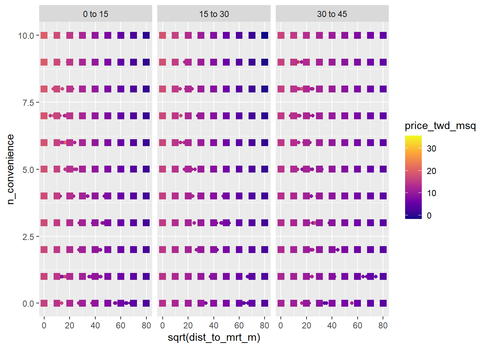
The plot nicely shows that the house price decreases as the square-root of the distance to the nearest MRT station increases, and increases as the number of nearby convenience stores increases, and is higher for houses under 15 years old.
15.3.3 Model performance
15.3.3.1 Sum of squares
In order to choose the “best” line to fit the data, regression models need to optimize some metric. For linear regression, this metric is called the sum of squares.
It takes the square of each residual, and add up those squares. So a smaller number is better.
15.3.3.2 Linear regression algorithm
The workflow is
Write a script to calculate the sum of squares.
Turn this into a function.
Use R’s general purpose optimization function find the coefficients that minimize this.
optim(par = c(var1 = int1, var2 = int2...), fn = function)
x_actual <- taiwan_real_estate$n_convenience
y_actual <- taiwan_real_estate$price_twd_msqCalculate the sum of squares.
# Set the intercept to 10
intercept <- 10
# Set the slope to 1
slope <- 1
# Calculate the predicted y values
y_pred <- intercept + slope * x_actual
# Calculate the differences between actual and predicted
y_diff <- y_pred - y_actual
# Calculate the sum of squares
sum(y_diff ^ 2)## [1] 7668Complete the function body.
calc_sum_of_squares <- function(coeffs) {
# Get the intercept coeff
intercept <- coeffs[1]
# Get the slope coeff
slope <- coeffs[2]
# Calculate the predicted y values
y_pred <- intercept + slope * x_actual
# Calculate the differences between actual and predicted
y_diff <- y_pred - y_actual
# Calculate the sum of squares
sum(y_diff ^ 2)
}Optimize the sum of squares metric.
# Optimize the metric
optim(
# Initially guess 0 intercept and 0 slope
par = c(intercept = 0, slope = 0),
# Use calc_sum_of_squares as the optimization fn
fn = calc_sum_of_squares
)## $par
## intercept slope
## 8.226 0.798
##
## $value
## [1] 4718
##
## $counts
## function gradient
## 87 NA
##
## $convergence
## [1] 0
##
## $message
## NULL# Compare the coefficients to those calculated by lm()
lm(price_twd_msq ~ n_convenience, data = taiwan_real_estate)##
## Call:
## lm(formula = price_twd_msq ~ n_convenience, data = taiwan_real_estate)
##
## Coefficients:
## (Intercept) n_convenience
## 8.224 0.798The sum of square is 4717.687
15.4 Multiple Logistic Regression
15.4.1 Multiple Logistic Regression
15.4.1.1 Visualizing
Use faceting for categorical variables.
For 2 numeric explanatory variables, use color for response.
Give responses below
0.5one color; responses above0.5another color.scale_color_gradient2(midpoint = 0.5)
Here we’ll look at the case of two numeric explanatory variables, and the solution is basically the same as before: use color to denote the response.
churn <- read_fst("data/churn.fst")
# Using churn, plot recency vs. length of relationship colored by churn status
ggplot(churn,
aes(time_since_first_purchase, time_since_last_purchase,
color = has_churned)) +
# Make it a scatter plot, with transparency 0.5
geom_point(alpha = 0.5) +
# Use a 2-color gradient split at 0.5
scale_color_gradient2(midpoint = 0.5) +
# Use the black and white theme
theme_bw()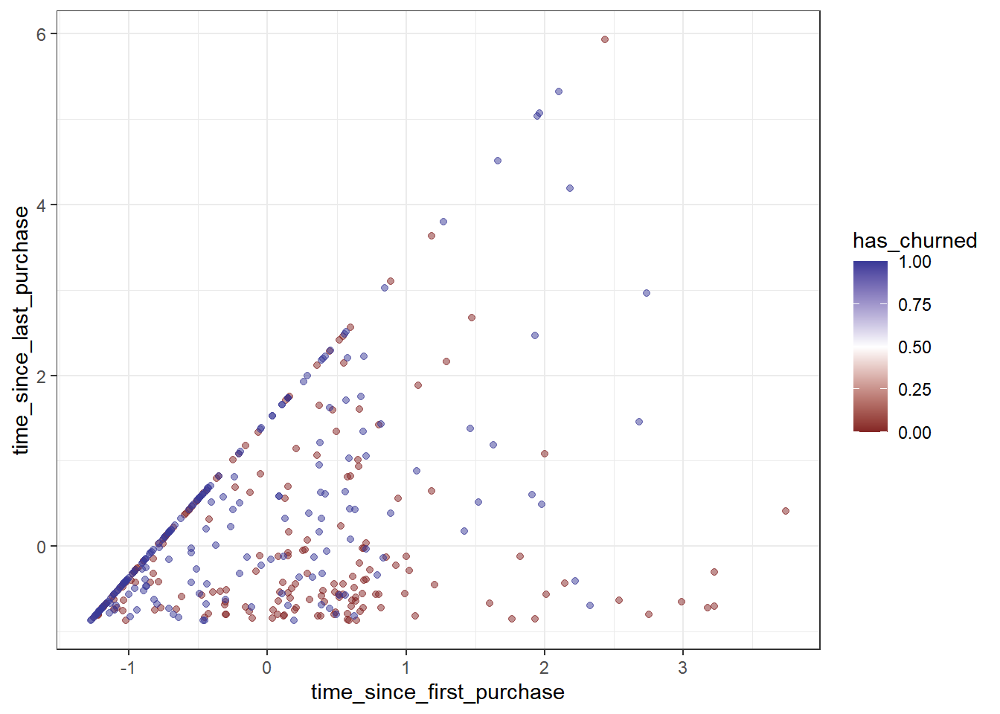
The 2-color gradient is excellent for distinguishing the two cases of a positive and negative response.
15.4.1.2 With 2 IVs
With interaction:
glm(response ~ explanatory1 * explanatory2, data = dataset, family = binomial)
Here you’ll fit a model of churn status with both of the explanatory variables from the dataset: the length of customer relationship and the recency of purchase.
# Fit a logistic regression of churn status vs. length of relationship, recency, and an interaction
mdl_churn_vs_both_inter <- glm(
has_churned ~ time_since_first_purchase * time_since_last_purchase,
churn,
family = "binomial")
# See the result
mdl_churn_vs_both_inter##
## Call: glm(formula = has_churned ~ time_since_first_purchase * time_since_last_purchase,
## family = "binomial", data = churn)
##
## Coefficients:
## (Intercept)
## -0.151
## time_since_first_purchase
## -0.638
## time_since_last_purchase
## 0.423
## time_since_first_purchase:time_since_last_purchase
## 0.112
##
## Degrees of Freedom: 399 Total (i.e. Null); 396 Residual
## Null Deviance: 555
## Residual Deviance: 520 AIC: 52815.4.1.3 Predicting
The only thing to remember here is to set the prediction type to "response".
# Make a grid of explanatory data
explanatory_data <- expand_grid(
# Set len. relationship to seq from -2 to 4 in steps of 0.1
time_since_first_purchase = seq(-2, 4, 0.1),
# Set recency to seq from -1 to 6 in steps of 0.1
time_since_last_purchase = seq(-1, 6, 0.1)
)
# See the result
explanatory_data## # A tibble: 4,331 × 2
## time_since_first_purchase time_since_last_purchase
## <dbl> <dbl>
## 1 -2 -1
## 2 -2 -0.9
## 3 -2 -0.8
## 4 -2 -0.7
## 5 -2 -0.6
## 6 -2 -0.5
## 7 -2 -0.4
## 8 -2 -0.3
## 9 -2 -0.2
## 10 -2 -0.1
## # ℹ 4,321 more rows# Add a column of predictions using mdl_churn_vs_both_inter and explanatory_data with type response
prediction_data <- explanatory_data %>%
mutate(has_churned = predict(mdl_churn_vs_both_inter,
explanatory_data,
type = "response"))
# See the result
prediction_data## # A tibble: 4,331 × 3
## time_since_first_purchase time_since_last_purchase has_churned
## <dbl> <dbl> <dbl>
## 1 -2 -1 0.716
## 2 -2 -0.9 0.720
## 3 -2 -0.8 0.724
## 4 -2 -0.7 0.728
## 5 -2 -0.6 0.732
## 6 -2 -0.5 0.736
## 7 -2 -0.4 0.740
## 8 -2 -0.3 0.744
## 9 -2 -0.2 0.747
## 10 -2 -0.1 0.751
## # ℹ 4,321 more rows# Extend the plot
ggplot(churn,
aes(time_since_first_purchase,
time_since_last_purchase,
color = has_churned)) +
geom_point(alpha = 0.5) +
scale_color_gradient2(midpoint = 0.5) +
theme_bw() +
# Add points from prediction_data with size 3 and shape 15
geom_point(data = prediction_data, size = 3, shape = 15)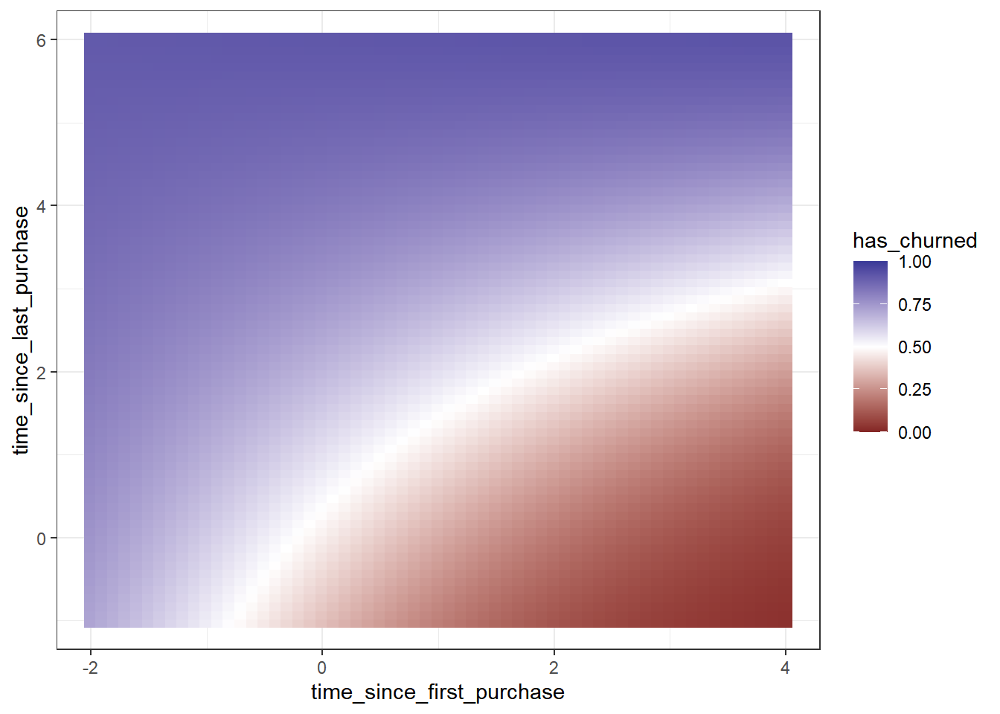
15.4.1.4 Confusion matrix
Generating a confusion matrix and calculating metrics like accuracy, sensitivity, and specificity is the standard way to measure how well a logistic model fits.
Get the predicted responses from the rounded, fitted values of mdl_churn_vs_both_inter.
library(yardstick)## Warning: package 'yardstick' was built under R version 4.3.2# Get the actual responses from churn
actual_response <- churn$has_churned
# Get the predicted responses from the model
predicted_response <- round(fitted(mdl_churn_vs_both_inter))
# Get a table of these values
outcomes <- table(predicted_response, actual_response)
# Convert the table to a conf_mat object
confusion <- conf_mat(outcomes)
# See the result
confusion## actual_response
## predicted_response 0 1
## 0 102 53
## 1 98 147Remember that the churn event is in the second row/column of the matrix.
# "Automatically" plot the confusion matrix
autoplot(confusion)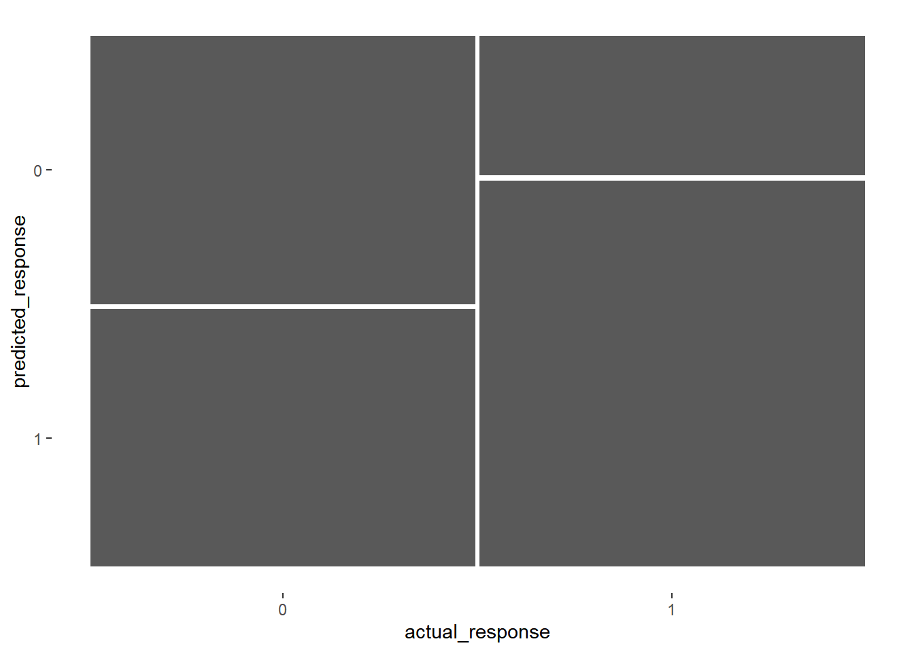
# Get summary metrics
summary(confusion, event_level = "second")## # A tibble: 13 × 3
## .metric .estimator .estimate
## <chr> <chr> <dbl>
## 1 accuracy binary 0.622
## 2 kap binary 0.245
## 3 sens binary 0.735
## 4 spec binary 0.51
## 5 ppv binary 0.6
## 6 npv binary 0.658
## 7 mcc binary 0.251
## 8 j_index binary 0.245
## 9 bal_accuracy binary 0.622
## 10 detection_prevalence binary 0.612
## 11 precision binary 0.6
## 12 recall binary 0.735
## 13 f_meas binary 0.66115.4.2 Logistic distribution
Distribution function names
| curve | prefix | normal | logistic | nmemonic |
|---|---|---|---|---|
| Probability density function (PDF) | d | dnorm() |
dlogis() |
“d” for differentiate - you differentiate the CDF to get the PDF |
| Cumulative distribution function (CDF) | p | pnorm() |
plogis() |
“p” is backwards “q” so it’s the inverse of the inverse CDF |
| Inverse CDF | q | qnorm() |
qlogis() |
“q” for quantile |
family = gaussian |
family = binomial |
|||
15.4.2.1 CDF & Inverse CDF
Logistic distribution CDF is also called the logistic function.
\(cdf(x) = 1 / (1 + exp(-x))\)
The plot of this has an S-shape, known as a sigmoid curve.
This function takes an input that can be any number from minus infinity to infinity, and returns a value between zero and one.
Each x input value is transformed to a unique value. That means that the transformation can be reversed.
Logistic distribution inverse CDF is also called the logit function.
- \(inverse\_cdf(p) = log(p / (1 - p))\)
Cumulative distribution function
Like the normal (Gaussian) distribution, it is a probability distribution of a single continuous variable. Here you’ll visualize the cumulative distribution function (CDF) for the logistic distribution.
logistic_distn_cdf <- tibble(
# Make a seq from -10 to 10 in steps of 0.1
x = seq(-10, 10, 0.1),
# Transform x with built-in logistic CDF
logistic_x = plogis(x),
# Transform x with manual logistic
logistic_x_man = 1 / (1 + exp(-x))
)
# Check that each logistic function gives the same results
all.equal(
logistic_distn_cdf$logistic_x,
logistic_distn_cdf$logistic_x_man
)## [1] TRUEThe logistic distribution’s cumulative distribution function is a sigmoid curve.
# Using logistic_distn_cdf, plot logistic_x vs. x
ggplot(logistic_distn_cdf, aes(x, logistic_x)) +
# Make it a line plot
geom_line()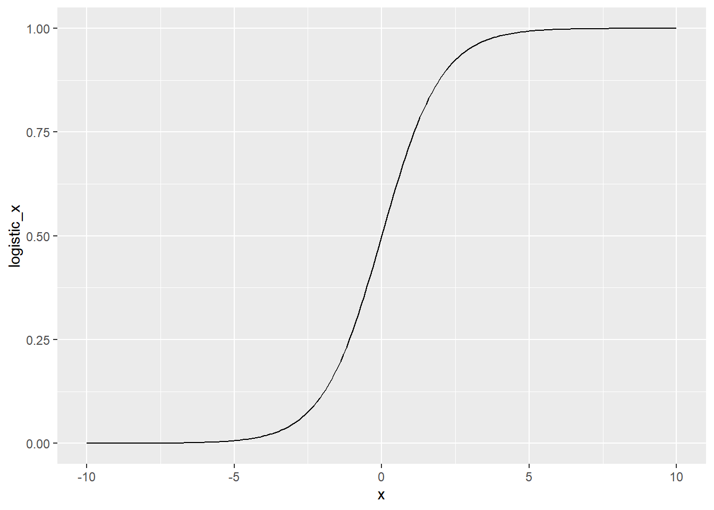
Inverse cumulative distribution function
logistic_distn_inv_cdf <- tibble(
# Make a seq from 0.001 to 0.999 in steps of 0.001
p = seq(0.001, 0.999, 0.001),
# Transform with built-in logistic inverse CDF
logit_p = qlogis(p),
# Transform with manual logit
logit_p_man = log(p / (1 - p))
)
# Check that each logistic function gives the same results
all.equal(
logistic_distn_inv_cdf$logit_p,
logistic_distn_inv_cdf$logit_p_man
)## [1] TRUE# Using logistic_distn_inv_cdf, plot logit_p vs. p
ggplot(logistic_distn_inv_cdf, aes(p, logit_p)) +
# Make it a line plot
geom_line()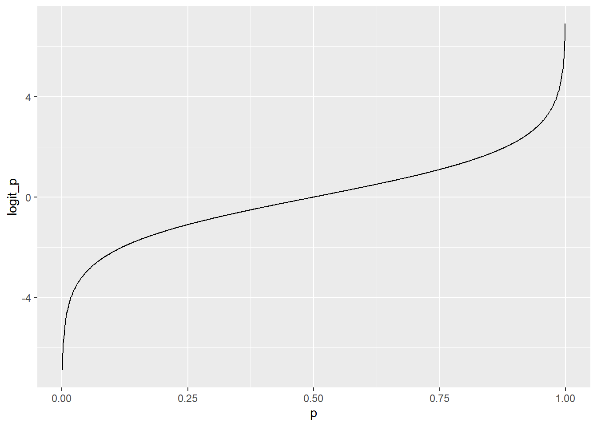
The inverse CDF is the “opposite” transformation to the CDF. If you flip the x and y axes on this plot, you get the same plot you saw in the previous exercise.
15.4.2.2 binomial family argument
binomial() is a function that returns a list of other functions that tell glm() how to perform calculations in the regression.
The two most interesting functions are linkinv and linkfun, which are used for transforming variables from the whole number line (minus infinity to infinity) to probabilities (zero to one) and back again. (Link function is a transformation of the response variable)
x <- seq(-10, 10, 0.2)
p <- seq(0.01, 0.99, 0.01)
# Look at the structure of binomial() function
str(binomial())## List of 13
## $ family : chr "binomial"
## $ link : chr "logit"
## $ linkfun :function (mu)
## $ linkinv :function (eta)
## $ variance :function (mu)
## $ dev.resids:function (y, mu, wt)
## $ aic :function (y, n, mu, wt, dev)
## $ mu.eta :function (eta)
## $ initialize: language { if (NCOL(y) == 1) { ...
## $ validmu :function (mu)
## $ valideta :function (eta)
## $ simulate :function (object, nsim)
## $ dispersion: num 1
## - attr(*, "class")= chr "family"Notice that it contains two elements that are functions, binomial()$linkinv, and binomial()$linkfun.
binomial()$linkinv = logistic distribution CDF, plogis()
# Call the link inverse on x
linkinv_x <- binomial()$linkinv(x)
# Check linkinv_x and plogis() of x give same results
all.equal(linkinv_x, plogis(x))## [1] TRUEbinomial()$linkfun = inverse CDF, qlogis()
# Call the link fun on p
linkfun_p <- binomial()$linkfun(p)
# Check linkfun_p and qlogis() of p give same results
all.equal(linkfun_p, qlogis(p))## [1] TRUEThese are used to translate between numbers and probabilities.
15.4.2.3 Logistic distribution parameters
The normal distribution has mean and standard deviation parameters that affect the CDF curve. The logistic distribution has location and scale parameters.
These two parameters allows logistic model prediction curves to have different positions or steepnesses.
location increases — logistic CDF curve moves rightwards
scale increases — the steepness of the slope deceases
15.4.3 Model performance
Likelihood
sum(y_pred * y_actual + (1 - y_pred) * (1 - y_actual))
When
y_actual = 1y_pred * 1 + (1 - y_pred) * (1 - 1) = y_pred
When
y_actual = 0y_pred * 0 + (1 - y_pred) * (1 - 0) = 1 - y_pred
Log-likelihood
Computing likelihood involves adding many very small numbers, leading to numerical error.
Log-likelihood is easier to compute.
log(y_pred) * y_actual + log(1 - y_pred) * (1 - y_actual)
Negative log-likelihood
Maximizing log-likelihood is the same as minimizing negative log-likelihood.
-sum(log_likelihoods)
15.4.3.1 Likelihood & log-likelihood
Logistic regression chooses the prediction line that gives you the maximum likelihood value. It also gives maximum log-likelihood.
15.4.3.2 Logistic regression algorithm
Rather than using sum of squares as the metric, we want to use likelihood. However, log-likelihood is more computationally stable, so we’ll use that instead.
Actually, there is one more change: since we want to maximize log-likelihood, but optim() defaults to finding minimum values, it is easier to calculate the negative log-likelihood.
Calculate the predicted y-values as the intercept plus the slope times the actual x-values, all transformed with the logistic distribution CDF.
x_actual <- churn$time_since_last_purchase
y_actual <- churn$has_churned
# Set the intercept to 1
intercept <- 1
# Set the slope to 0.5
slope <- 0.5
# Calculate the predicted y values
y_pred <- plogis(intercept + slope * x_actual)
# Calculate the log-likelihood for each term
log_likelihoods <- log(y_pred) * y_actual + log(1 - y_pred) * (1 - y_actual)
# Calculate minus the sum of the log-likelihoods for each term
-sum(log_likelihoods)## [1] 326Complete the function body.
calc_neg_log_likelihood <- function(coeffs) {
# Get the intercept coeff
intercept <- coeffs[1]
# Get the slope coeff
slope <- coeffs[2]
# Calculate the predicted y values
y_pred <- plogis(intercept + slope * x_actual)
# Calculate the log-likelihood for each term
log_likelihoods <- log(y_pred) * y_actual + log(1 - y_pred) * (1 - y_actual)
# Calculate minus the sum of the log-likelihoods for each term
-sum(log_likelihoods)
}Optimize the maximize log-likelihood metric.
# Optimize the metric
optim(
# Initially guess 0 intercept and 1 slope
par = c(intercept = 0, slope = 1),
# Use calc_neg_log_likelihood as the optimization fn
fn = calc_neg_log_likelihood
)## $par
## intercept slope
## -0.0348 0.2689
##
## $value
## [1] 273
##
## $counts
## function gradient
## 51 NA
##
## $convergence
## [1] 0
##
## $message
## NULL# Compare the coefficients to those calculated by glm()
glm(has_churned ~ time_since_last_purchase, data = churn, family = binomial)##
## Call: glm(formula = has_churned ~ time_since_last_purchase, family = binomial,
## data = churn)
##
## Coefficients:
## (Intercept) time_since_last_purchase
## -0.035 0.269
##
## Degrees of Freedom: 399 Total (i.e. Null); 398 Residual
## Null Deviance: 555
## Residual Deviance: 546 AIC: 550The maximize log-likelihood is 273.2002